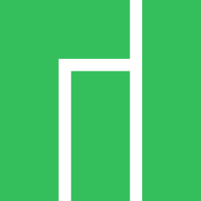

Ubuntu
The most popular Linux distro, great for beginners with a large community and extensive documentation.
View Details →
Linux Mint
A user-friendly distro based on Ubuntu, featuring the Cinnamon desktop for a familiar experience.
View Details →Arch Linux
A lightweight, flexible distro for advanced users who want to build their system from scratch.
View Details →
Fedora
A cutting-edge distro sponsored by Red Hat, great for developers and desktop users alike.
View Details →
Debian
The universal operating system, rock-solid stability and one of the oldest active distros.
View Details →
Manjaro
An accessible Arch-based distro with a user-friendly installer and curated rolling updates.
View Details →
Kali Linux
The go-to distro for penetration testing and security research, packed with hacking tools.
View Details →
Pop!_OS
A developer and gamer-friendly distro by System76 with excellent GPU support out of the box.
View Details →
Lubuntu
A lightweight Ubuntu variant using LXQt, perfect for older or low-spec hardware.
View Details →
Parrot OS
A security-focused distro with a privacy-hardened environment, plus a lightweight Home edition for everyday use.
View Details →
Bazzite
An immutable Fedora-based distro built for gaming, with day-one support for Steam Deck hardware and handhelds.
View Details →
CachyOS
A performance-tuned Arch-based distro using the BORE scheduler and optimized packages for maximum responsiveness.
View Details →
Solus
An independent rolling distro built around the curated Budgie desktop, designed for home desktop use.
View Details →elementary OS
A polished, macOS-inspired distro focused on design and simplicity, ideal for users new to Linux.
View Details →KDE Neon
Ubuntu LTS base shipping the latest stable KDE Plasma desktop straight from the KDE developers.
View Details →Gentoo
A source-based meta-distribution where you compile everything yourself for ultimate control and optimization.
View Details →Void Linux
An independent, musl-or-glibc rolling distro with the runit init system and a no-nonsense philosophy.
View Details →